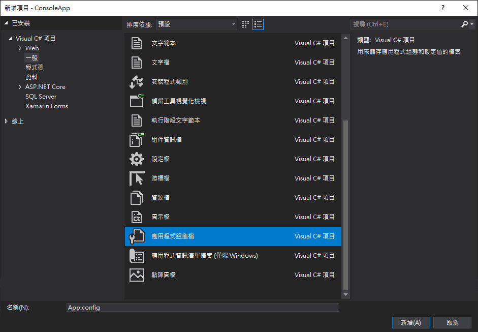
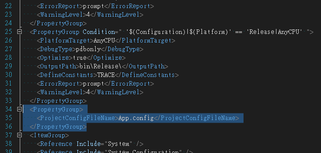
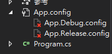

介紹如何在 Visual Studio 主控台應用程式專案中，設定多個應用程式組態檔 (App.config)。在 Debug/Release 不同組態間載入不同的變數資料。
分別介紹 appSettings 、 applicationSettings 兩種方式，這兩種方式可以共存，要注意在程式中讀取方式不同，範例中主要 key 都名稱設為 keyName ， value 依不同組態設定：
- App.config 設定為
default - App.Debug.config 設定為
debug - App.Release.config 設定為
release
appSettings 取值方式
string value = ConfigurationManager.AppSettings["keyName"];
applicationSettings 取值方式
string value = Properties.Settings.Default.keyName;
# 新增應用程式組態檔 App.config
如果專案已經有 App.config 的可忽略該步驟
- 方案總管
- 在專案上按右鍵，選取
加入/新增項目是
專案不是解決方案 - 選取一般 / 應用程式組態檔
- 檔名使用 App.config

# 編輯專案檔 .csproj
- 方案總管
- 在專案上按右鍵，選取
卸載專案 - 在專案上按右鍵，選取
編輯專案檔就是編輯
<專案名稱>.csproj這個檔案
# 新增 PropertyGroup
專案檔內應該會有其他 PropertyGroup 區塊，可加在其他 PropertyGroup 下面
<PropertyGroup> | |
<ProjectConfigFileName>App.config</ProjectConfigFileName> | |
</PropertyGroup> |

# 修改 ItemGroup
原先的專案檔應該有
<ItemGroup> | |
<None Include="App.config" /> | |
</ItemGroup> |
將他改為
<ItemGroup> | |
<None Include="App.config" /> | |
<None Include="App.Debug.config"> | |
<DependentUpon>App.config</DependentUpon> | |
</None> | |
<None Include="App.Release.config"> | |
<DependentUpon>App.config</DependentUpon> | |
</None> | |
</ItemGroup> |
# 新增 Import
專案檔下面會有一行
<Import Project="$(MSBuildToolsPath)\Microsoft.CSharp.targets" />
在他下面增加
<Import Project="$(MSBuildExtensionsPath)\Microsoft\VisualStudio\v$(VisualStudioVersion)\Web\Microsoft.Web.Publishing.targets" /> | |
<Target Name="AfterBuild"> | |
<TransformXml Source="@(AppConfigWithTargetPath)" Transform="$(ProjectConfigTransformFileName)" Destination="@(AppConfigWithTargetPath->'$(OutDir)%(TargetPath)')" /> | |
</Target> |
# 重新載入專案
- 方案總管
- 在專案上按右鍵，選取
重新載入專案如果載入成功表示上面的修改格式都正確
# 新增 Debug/Release 組態設定檔
專案載入成功後在方案總管內應該會看到 App.Debug.config 與 App.Release.config 前面有紅色 x 的畫面，表示專案有設置但是檔案不存在。

要手動新增組態設定檔，參考 新增應用程式組態檔 App.config 分別新增兩個檔名為 App.Debug.config 與 App.Release.config 的組態設定檔 (注意大小寫)。
# 新增 appSettings
可在 appSettings 內設定多個 key
如果 App.Debug.config 、 App.Release.config 內沒有設置的 key 預設會抓取 App.config 內的值
如果 App.Debug.config 、 App.Release.config 內有設置，但 App.config 內沒設置的 key 則會是空值，不會套用 Debug/Release 的設定
# App.config
設置的 value 為 default
<?xml version="1.0" encoding="utf-8" ?> | |
<configuration> | |
... | |
<appSettings> | |
<add key="keyName" value="default" /> | |
</appSettings> | |
... | |
</configuration> |
# App.Debug.config
configuration 後要有 xmlns:xdt 屬性
key 要有 xdt:Transform 、 xdt:Locator 屬性
<?xml version="1.0" encoding="utf-8" ?> | |
<configuration xmlns:xdt="http://schemas.microsoft.com/XML-Document-Transform"> | |
... | |
<appSettings> | |
<!-- 設置的 `value` 為 debug --> | |
<add key="keyName" value="debug" xdt:Transform="SetAttributes" xdt:Locator="Match(key)"/> | |
</appSettings> | |
... | |
</configuration> |
# App.Release.config
configuration 後要有 xmlns:xdt 屬性
key 要有 xdt:Transform 、 xdt:Locator 屬性
<?xml version="1.0" encoding="utf-8" ?> | |
<configuration xmlns:xdt="http://schemas.microsoft.com/XML-Document-Transform"> | |
... | |
<appSettings> | |
<!-- 設置的 `value` 為 release --> | |
<add key="keyName" value="release" xdt:Transform="SetAttributes" xdt:Locator="Match(key)"/> | |
</appSettings> | |
... | |
</configuration> |
# 取得 appSettings 值
使用下面程式取抓取組態設定檔內設定的值，根據執行 Debug、Release 組態不同會顯示不同的值 (取決於設定檔 value )
string value = ConfigurationManager.AppSettings["keyName"]; | |
Console.WriteLine(value); | |
Console.ReadKey(); |
編譯完成後，在 ./bin/Debug、./bin/Release 內都會有一個 .config 檔，分別就是 App.Debug.config 、 App.Release.config 的內容。
# 使用 applicationSettings 方法
這邊介紹使用 applicationSettings 的方法，該方法的優點就是在程式中會自動列出可使用的 key ，缺點就是比較繁瑣，需要修改 Settings.Designer.cs
applicationSettings 跟 appSettings 可同時存在
# 專案屬性設定
- 方案總管
- 在專案上按右鍵，選取
屬性 - 點選
設定，名稱設定keyname，值設定default，範圍選取應用程式
儲存後 App.config 會增加 <applicationSettings> ， Properties/Settings.Designer.cs 也會變更
Console.App 會根據專案名稱不同
<?xml version="1.0" encoding="utf-8" ?> | |
<configuration> | |
... | |
<applicationSettings> | |
<ConsoleApp.Properties.Settings> | |
<setting name="keyName" serializeAs="String"> | |
<value>default</value> | |
</setting> | |
</ConsoleApp.Properties.Settings> | |
</applicationSettings> | |
... | |
</configuration> |
# 修改 App.Debug.config
Console.App 會根據專案名稱不同
configuration 要有 xmlns:xdt 屬性
setting 要有 serializeAs 、 xdt:Transform 屬性
<?xml version="1.0" encoding="utf-8" ?> | |
<configuration xmlns:xdt="http://schemas.microsoft.com/XML-Document-Transform"> | |
... | |
<applicationSettings> | |
<ConsoleApp.Properties.Settings> | |
<setting name="keyName" serializeAs="String" xdt:Transform="Replace"> | |
<!-- 將 value 內容設定為 debug --> | |
<value>debug</value> | |
</setting> | |
</ConsoleApp.Properties.Settings> | |
</applicationSettings> | |
... | |
</configuration> |
# 修改 App.Release.config
Console.App 會根據專案名稱不同
configuration 要有 xmlns:xdt 屬性
setting 要有 serializeAs 、 xdt:Transform 屬性
<?xml version="1.0" encoding="utf-8" ?> | |
<configuration xmlns:xdt="http://schemas.microsoft.com/XML-Document-Transform"> | |
... | |
<applicationSettings> | |
<ConsoleApp.Properties.Settings> | |
<setting name="keyName" serializeAs="String" xdt:Transform="Replace"> | |
<!-- 將 value 內容設定為 release --> | |
<value>release</value> | |
</setting> | |
</ConsoleApp.Properties.Settings> | |
</applicationSettings> | |
</configuration> |
# 取得 applicationSettings properties
使用下面程式取抓取組態設定檔內設定的值，根據執行 Debug、Release 組態不同會顯示不同的值。
string value = Properties.Settings.Default.keyName; | |
Console.WriteLine(value); | |
Console.ReadKey(); |
Default 能不能帶出 keyName 要看 Properties/Settings.Designer.cs 有沒有修改，可以參考 專案屬性設定 新增 key。
# 完整程式碼
https://github.com/8loser/Multiple-App.config
# 參考資料
https://iamsbc.blogspot.com/2019/09/visual-studio-consoleappreleaseconfigap.html
https://demo.tc/post/775
https://amolpandey.com/2021/01/05/multiple-app-config-in-c-solution-based-on-build-selection/